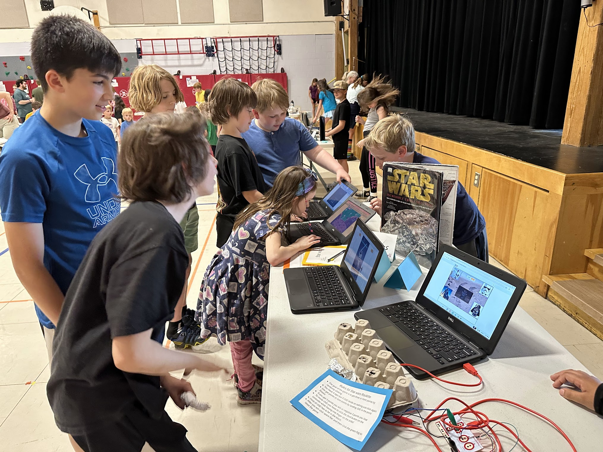

How Our Residencies Work
-
1. Initial Consultation
We learn about your goals and needs to ensure alignment with your school vision and budget. We identify which grade levels will be included in the residency.
-
2. Co-Planning
Together, we identify desired curricular themes for each grade band included and outline a draft schedule. We design a customized residency that meets your vision.
-
3. Implementation
We bring our maker tools and specialized supplies to supplement your own school supplies. Teachers learn alongside their students as we model how to integrate making and creating into the curriculum.
-
4. Debrief and Support
Free resources and continued guidance helps educators integrate STEAM & maker education into your curriculum beyond the residency.
Recent Residencies
Cambridge Elementary School
4th graders created multi-layered laser cut maps to display 12 covered bridges from 3rd grade Cambridge History Project
The Warren School
Eight days of inquiry, creating, making, and coding inspired by Literature in PreK - Grade 6. .

Newport City Elementary School
Creating Constellations Inspired by Greek Myths using Circuits and Laser Cutter.
Moretown Elementary
Creating with Circuits and Code Inspired by Nature in PreK to Grade 6.
For more inspiration check out past residencies
~Each residency is customized to meet the your school goals.
~Each residency engages students in creative and practical problem solving.
~Each resdiency is designed to leave educators with the confidence they need to integrate new ways of learning through creating and making in their curriculum.
Invite Lucie & Tina to Your School

Lucie deLaBruere
Email: idelabruere@gmail.com
Lucie is founder of Create Make Learn Summer. She has 40 years of experience as a Vermont educator and ambassador of creativity and innovation. She is committed to digital equity, project based learning and hands-on minds-on learning.
Christina Smith
Email: techguidevt@gmail.com
Christina is an award winning science educator and maker educator with over 30 years of experience in Vermont schools. She helps our youngest learners experience science, computer science, robotics, and STEAM based learning.